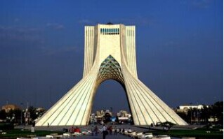

- 波斯国旗
- 波斯国徽
- 波斯标志性建筑
- 波斯地理位置
波斯概况
波斯是伊朗在欧洲的古希腊语和拉丁语的旧称译音，是伊朗历史的一部份，“波斯”被用于描述1935年之前的事，或该民族从古就有的事物，如波斯语和波斯地毯。现代政治、经济等事物则用“伊朗”一词。国土面积约1648195平方公里，世界排名第十八。
人口概况
伊朗是一个多民族的伊斯兰国家，其中波斯人占51%，阿塞拜疆人占25%，库尔德人占5%，还有阿拉伯人、巴赫蒂亚里人、卢尔人、俾路支人及土克曼人等少数民族。 2011年伊朗人口普查结果显示人口为75149669人。 官方语言为波斯语, 伊斯兰教(什叶派)为国教, 98．8%的居民信奉伊斯兰教, 其中91%为什叶派, 7．8%为逊尼派。
波斯经济
伊朗是亚洲主要经济体之一。伊朗的经济实力位居亚洲第七位（次于中、日、印、韩、印尼、沙特）。2011年伊朗银行经济帐户局的初步数据显示，伊历1389年（2010年3月21日-2011年3月20日），按当年基本价格计算，伊朗名义GDP为43，042，640亿伊朗里亚尔，同比增长20.8%；按伊历1376年可比基本价格计算，实际GDP为5，392，190亿伊朗里亚尔，同比增长5.8%；GDP平减指数为798.24，同比变化14.3%。
经济以石油开采业为主, 胡齐斯坦为石油工业区与重要出海门户。也发展炼油与石油化工, 以及钢铁、机械等工业部门。石油和天然气储量丰富。石油是伊朗的经济命脉, 目前伊朗是世界第二大原油出口国。已探明的石油储量为930亿桶, 占世界总储量的10%, 居于世界第五位。已探明的天然气储量为24万亿立方米, 占世界总储量的16%, 仅次于俄罗斯, 居世界第二位。石油是伊朗的经济命脉, 目前, 日产能力可达410万桶, 石油收入占全部外汇收入的90%, 伊朗成为欧佩克成员国中第二大原油出口国。森林是伊朗仅次于石油的第二大天然资源, 面积达1800万公顷。伊朗水产丰富, 鱼子酱举世闻名。
外交关系
伊朗奉行独立、不结盟的对外政策，反对霸权主义、强权政治和单极世界，愿同除以色列以外的所有国家在相互尊重、平等互利的基础上发展关系。倡导不同文明进行对话及建立公正、合理的国际政治、经济新秩序。认为国家的主权和领土完整应得到尊重，各国有权根据自己的历史、文化和宗教传统选择社会发展道路，反对西方国家以民主、自由、人权、裁军等为借口干涉别国内政或把自己的价值观强加给他国。伊斯兰革命以后, 伊朗与欧美关系恶化至今仍然难以调和。
经贸往来
伊朗主要出口商品为油气、金属矿石、皮革、地毯、水果、干果及鱼子酱等，主要进口产品有粮油食品、药品、运输工具、机械设备、牲畜、化工原料、饮料及烟草等。